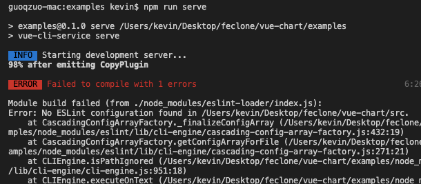
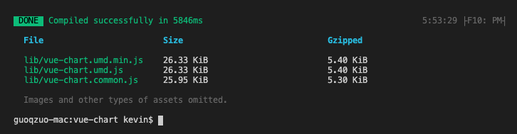
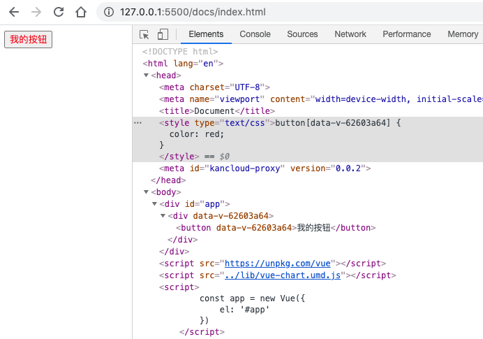
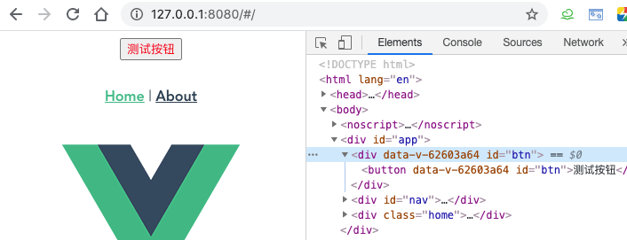
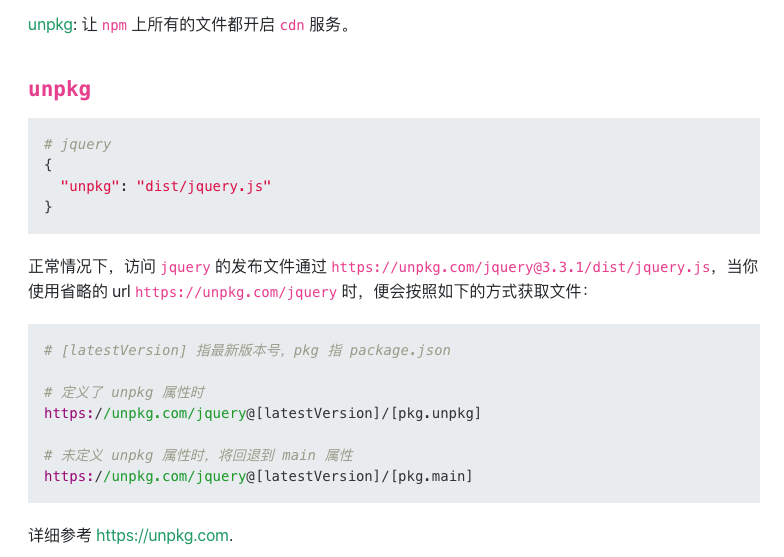
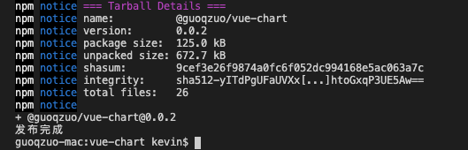
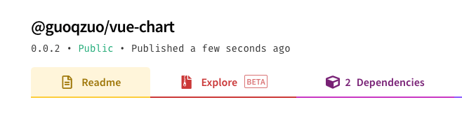

怎么用vue写一个组件库，类似element
下面通过一个简单的示例来看怎么写一个vue组件库，分为 6 步
- 目录规划
- 组件库入口文件
- 本地测试组件
- 打包构建 UMD
- 上传 npm 包
- dosify搭建官网
1.组件库目录结构
以 element 为例，下面是一个简单的目录结构
├── examples # 用于测试组件，demo展示（可以直接是一个完整的vue项目）
├── packages # 用于存放编写的组件
│ └── my-button # 封装的组件，具体写法参见element源码
│ ├── src
│ │ └── main.vue # 单文件组件，组件
│ └── index.js # install方法，用于Vue.use()引入单个组件
└── src
└── index.js # 入口文件2.导出组件库
我们写好组件后，主要问题是要怎么导出(export)供其他项目使用，一般在 src/index.js 里进行处理
// src/index.js 示例，主要是引入(import)组件再导出(export)，包括Vue.use所需的 install函数处理
import MyButton from "../packages/my-button/index.js";
const components = [MyButton];
// Vue.use() 一次性安装所有组件
const install = function(Vue) {
if (install.installed) return;
components.forEach(component => Vue.use(component));
// 如果没有在src/index.js里实现install方法，就需要使用下面的
// components.forEach(component => Vue.component(component.name, component))
};
// 直接给浏览器或 AMD loader 使用
if (typeof window !== undefined && window.Vue) {
window.Vue.use(install);
if (install.installed) {
install.installed = false;
}
}
export default {
install, // 用于ES modules，import Vue 后直接使用 Vue.use()
MyButton // 支持解构赋值按需引入单个组件
};3.本地测试组件
假设我们这个组件命名为vue-chart，那可以在 examples/src/mian.js 直接使用
// examples/src/mian.js
// 引入所有组件
import VueChart from '../../src/index.js'
Vue.use(VueChart)
// 按需引入单个组件
import { MyButton } from '../../src/index.js'
Vue.use(MyButton)引入后，我们在 App.vue里直接使用该组件
<!-- App.vue -->
<template>
<div id="app">
<my-button id="btn">测试按钮</my-button>
</div>
</template>这里可能涉及到 examples 目录 npm run serve 时，提示 eslint 错误

因为 examples 是一个独立的vue项目，引入了外部 packages 目录的文件，如果 packages 下组件不符合eslint规则就需要在项目根目录的package.json里配置eslint规则了，与examples项目的eslint规则保持一致。参考我之前的笔记："怎么在老项目中加入eslint规则，并可以保存后自动fix"
这样使用eslint处理 packages 目录下的代码，再运行 examples 目录下的 npm run serve 就可以正常加载组件了
4.打包构建umd
上面我们本地测试了，但他不能直接在普通网页中通过引入某个js文件来使用，这就需要使用Vue CLI来打包构建了
使用 vue-cli 打包成 lib，参考文档 构建目标 | Vue CLI
由于我们的项目结构不是通过vue-cli生成的，所以就算使用npm install @vue/cli --save，安装 @vue/cli，也无法使用 vue-cli-service 服务，因为 @vue/cli 这个包是一个用于生成脚手架项目的。你没有用它生成项目，如果不安装对应的 npm 包是无法使用 vue-cli-servie 的，我们直接从 vue create 生成的项目中把 devDependencies、dependencies，配置移动到根目录的 package.json 里，再npm install
// dependencies
"dependencies": {
"core-js": "^3.6.5",
"vue": "^2.6.11"
},
// devDependencies
"@vue/cli-plugin-babel": "~4.5.0",
"@vue/cli-plugin-router": "~4.5.0",
"@vue/cli-plugin-vuex": "~4.5.0",
"@vue/cli-service": "~4.5.0",
"less": "^3.0.4",
"less-loader": "^5.0.0",
"vue-template-compiler": "^2.6.11"
// browserslist
"browserslist": [
"> 1%",
"last 2 versions",
"not dead"
],新增一个lib打包命令
// --dest lib 指定 output 目录文 lib，默认为 dist 目录
// src/index.js 最后为入口文件，默认为 src/App.vue。
"scripts": {
"build:lib": "vue-cli-service build --mode lib --target lib --dest lib src/index.js"
} 理论上 npm run build:lib 会在当前目录下创建lib目录，且包含4个文件
- lib/myLib.common.js：一个给打包器用的 CommonJS 包 (不幸的是，webpack 目前还并没有支持 ES modules 输出格式的包)
- lib/myLib.umd.js：一个直接给浏览器或 AMD loader 使用的 UMD 包
- lib/myLib.umd.min.js：压缩后的 UMD 构建版本
- lib/myLib.css：提取出来的 CSS 文件 (可以通过在 vue.config.js 中设置 css: { extract: false } 强制内联)
实际我这里打包后没有生成css文件，因为我们多加了一个 --mode lib 参数

一般将打包后的文件 xx.umd.js 引入到项目中就可以使用了，来看看示例
<!-- docs/index.html -->
<body>
<div id="app">
<my-button>我的按钮</my-button>
</div>
<script src="https://unpkg.com/vue"></script>
<script src="../lib/vue-chart.umd.js"></script>
<script>
const app = new Vue({
el: '#app'
})
</script>
</body>
vue项目中引用
// examples/src/main.js
import VueChart from "../../lib/vue-chart.umd.js";
Vue.use(VueChart);效果如下

5.上传npm包
我们可以把包弄成npm包，在其他vue项目中，可以直接引入，将 package.json 的 main.js 设置为umd模块地址，并加上unpkg参数，用于cdn直接引入
// package.json
"name": "@guoqzuo/vue-chart", // 将项目名称改为加上自己作用域的包
"version": "0.0.2", // 设置项目版本，注意每次修改版本，package-lock.json的版本也要改
// 指定npm包入口，当我们import某个npm包时，导入的文件就是这个main指定的文件
"main": "lib/vue-chart.umd.min.js"
// cdn相关
"unpkg": "lib/vue-chart.umd.min.js",关于unpkg

修改好后，我们来发布这个npm包，注意：需要先有对应的npm账号，我的npm账号是 guoqzuo，这里在项目根目录新建一个publish.sh脚本来发布
#!/usr/bin/env bash
npm config get registry # 检查仓库镜像库
npm config set registry=http://registry.npmjs.org
echo '请进行登录相关操作：'
npm login # 登陆
# npm login --scope=@guoqzuo # 设置登录作用域
echo "-------publishing-------"
npm publish --access public # 发布
npm config set registry=https://registry.npm.taobao.org # 设置为淘宝镜像
echo "发布完成"
exit一般新建的publish.sh是没有执行权限的，使用 chmod +x publish.sh 添加可执行权限，再 ./publish.sh 执行发布，发布过程中，需要登录npm账号、密码等即可

我们这里examples目录也跟着发布上传了，可以加参数来限定上传到npm包的文件。细节方面后面在优化。我们可以看到npm官网有我们刚上传的 @guoqzuo/vue-chart 了

测试npm包，在vue项目中先安装
# 这里建议加@latest，因为有时候发布后有延时
# 直接npm i @guoqzuo/vue-chart 后可能还是原来的旧版本
npm i @guoqzuo/vue-chart@latest安装完成后，再在 main.js 里引入，npm run serve 后可正常渲染
// examples/src/main.js
import VueChart from "@guoqzuo/vue-chart";
Vue.use(VueChart);另外，我们再测试下 unpkg cdn是否生效
<!-- docs/index.html -->
<body>
<div id="app">
<my-button>我的按钮</my-button>
</div>
<script src="https://unpkg.com/vue"></script>
<!-- <script src="../lib/vue-chart.umd.js"></script> -->
<script src="https://unpkg.com/@guoqzuo/vue-chart@latest/lib/vue-chart.umd.min.js"></script>
<script>
const app = new Vue({
el: '#app'
})
</script>
</body>测试可正常运行，以上完成了一个基本vue组件库的开发流程，后面再慢慢优化。
6. dosify官网搭建
使用 dosify 写一个组件库官网，参考 怎么写出类似element官网那样可以实时看运行效果的文档
完整代码已上传github，参见 zuoxiaobai/vue-chart
使用 dosify 写的对应的官网 @guoqzuo/vue-chart官网
参考：